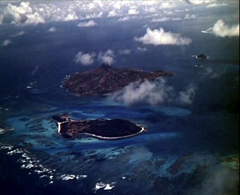

WHAT'S NEW IN
AVENGERLAND
2007 to 2008
2008
30th December -An interesting find by Geoff Dodd may help uncover more locations from JOURNEY TO THE UNKNOWN: The New People. at he has identified the local off licence seen in the episode as The Brookmans Hotel, Bradmore Green, Brookman's Park.
19th December -Another golf course, this time identified by Geoff Dodd. Carnoustie Golf Course is the one masquerading as ‘Colindale Golf Course‘ in the DEPARTMENT S episode Handicap Dead.
18th December - Very good to hear once more from the man who started this guide off. Michael Richardson has finally identified the golf course from the MAN IN A SUITCASE episode The Boston Square. It is Gleneagles Hotel, Auchterarder, Perth and Kinross, Scotland.
17th December - Geoff Doddhas identifiedRutland Gate SW7 as the Moscow street seen in the DEPARTMENT S episode The Perfect Operation.
16th December - Leyther8008, on the Britmovie Forum has finally found the Sussex coastal town seen in THE SAINT: The People Importers. This is Gorey, Jersey.
14th December - Sam Denham has come up with the goods again, identifying the corner of Grafton Street and New Bond Street, W1 in DANGER MAN,Say It With Flowers.
13th December 2008 - Sam Denham has finally identified the junction of Church Street, Lisson Grove, NW8 from RETURN OF THE SAINT: The Obono Affair.
Also from RETURN OF THE SAINT, GBC from the Britmovie Forum has identified Glamis Road, Tower Hamlets, E1 as appearing in the episode One Black September.
17th November - Lots of new DEPARTMENT S unknowns on pages LS10 and LS64
14th November - Alan Field has proved his worth yet again by identifying the railway locations seen in THE SAINT: The Contract (sidings South of Hitchen station and THE SAINT: The Set-Up (former Fulwell & Westbury Station, Westbury, Buckinghamshire. For good measure he has spotted Harley House Marylebone Road, Regents Park, London, NW1 in DEPARTMENT S: A Ticket To Nowhere.
12th November - Thanks to the efforts of Paul Stroud we now have a Denmark page. Paul has populated the site page with Danish locations from THE PROTECTORS episodes, Baubles, Bangles and Beads, Route 27 and Bagman. Whilst researching he also came up with a couple of Action City locations: Hyde Park Corner/Duke of Wellington Place, W1 in Baubles, Bangles and Beads and Cranbourn Street, WC2 in Route 27.
10th November - Neil Saunders has filled in the gaps with details of Avengerland locations that also feature in films: Great Conservatory in Syon Park, which features in the MAN IN A SUITCASE episode The Sitting Pigeon also features in BEDAZZLED (1967) and The London Apprentice, Isleworth, also appears in Joseph Losey's THE CRIMINAL (1960).
12th November - A correction form Paul AgeraboutMonksbridge featured in THE AVENGERS: What the Butler Saw. Sunbury on Thames is in Middlesex not Berkshire. Please keep the corrections coming in, I’d rather this guide was as accurate as possible.
5th November - Thanks to Paul Stroud who is doing sterling work trawling through the stock footage used in THE CHAMPIONS. He has just identified the Austrian hospital seen The Final Countdown as Stift (a monastery) Stams, StamsAustria.
26th October - Matt Courtman has started to put together an wonderful set of ‘then and now’ images on his DANGER MAN website, called The Danger Man Website. It is heart warming to see someone making full use of the information in this guide and using it such a productive manner.
25th October -Thanks must go to Alan Field, Geoff Dodd and Keith Howard, for identifying O21 as the scene for the car crash in THE BARON: The Man Outside. O21 is proving to be a goldmine of ‘new’ locations.
24th October - Another list of locations spotted by Alan Field, all from DEPARTMENT S:
A Ticket To Nowhere – H68: An impressive piece of filming as Jason King’s Bentley drives along the M4, a camera vehicle running parallel on Farm Road films the action. Also seen in this episode is the M4 Airport Spur.
O21 is seen used extensively in The Trojan Tanker.
N21, London Road/Silver Hill features in The Man From 'X', The Treasure Of The Costa Del Sol and The Man In The Elegant Room.
Alan also spotted the a sequence I had down as Burnham Beeches in Who Plays The Dummywas actually B17, the AshridgeEstate
23rd October - Apologies to Mike Saunders who put me on to this location in October 2004, but I have only just followed up on his suggestion. The DEPARTMENT S episodes Blackout and The Treasure of the Costa Del Sol both contain location shooting at Studland Bay, Dorset. Both use the nudist beach and Ferry Road.
It was Alan Field spotting Pinecliff Road, Poole in The Treasure of the Costa Del Sol that reminded me of Mike’s suggestion. Whilst I was searching the area I also came across the cliffs of Chapman’s Pool, a location featured in two DANGER MAN episodes, which I thought were in Wales.
22nd October - Paul Stroud has sent in a cosmopolitan selection of locations. Taking nothing for granted he has noticed that the rooftop Craig Sterling recalls nearly jumping from in THE CHAMPIONS: The Interrogation is not that seen in A Case of Lemmings, but a hotel on the corner of Promenade des Anglais/Rue Meyerbeer, Nice, France.
Also in France is Le Grande Hotel Tarrane, next door to BrasserieLipp, Boulevard Saint-Germain, Paris, a haunt of Jim Morrison and McGill. This hotel can be seen in two MAN IN A SUITCASE episodes, Dead Man's Shoes and Blind Spot. Dead Man's Shoes also features a reappeared in the series of Gloucester Road, SW7.
OtherMAN IN A SUITCASElocations found by Paul are: Excelsior Hotel, Rome in Find the Lady and Cromwell Road, in All that Glitters.
To round things off, literally, he also spotted Via Nazionale, Rome in THE CHAMPIONS: A Case of Lemmings.
12th October - Alan FieldRANDALL AND HOPKIRK [DECEASED]: Murder Ain’t What It Used To Be MAN IN A SUITCASE: The Whisper
7th October - Arthur de Crecy's RANDALL AND HOPKIRK [DECEASED]: But What a Sweet Little Room ‘Gypsy’ on the Britmovie Forum. The building is an apartment block on Cranmer Court, SW3.
1st October - Thanks to Alan Field for spotting Ruislip Lido in the closing sequence in THE AVENGERS: Castle De'Ath
September - Lots of locations found, but still being processed. I’ve opened up LS00 for more found locations while clear the decks.
26th September - A major new location find by Alan Field, Q23, Warren Lane, Stanmore. Alan has spotted this distinctive stretch of road in GIDEON’S WAY: The Lady Killer and The Great Plane Robbery, THE SAINT: The Damsel in Distress, The Fast Women and Flight Plan and DEPARTMENT S: Soup of the Day. This is a very distinctive area and I should think that now Alan has identified it there will be some more appearances spotted soon.
25th September - Nick Atkinson has identified the A412 between Slough and Iver Heath as the road seen in THE SAINT: The Noble Sportsman as Lord Yearley drives to his house in the country from London. This is now H67.
21st September – Many thanks to Richard Lee-Van den Daele who has sent in photos of Penmon Point, Cemaes Bay and the Plas Hall Hotel for the guide.
19th September – Angelo Zumbo, THE PROTECTORS: A Case for Right - Villa Giovannelli Fogaccia, Rome
19th September - christoph404 - RANDALL AND HOPKIRK [DECEASED]: You Can Always Find a
Fall Guy (Ray Austin:
August 1968)
Corner of New Bond Street and
Burlington Gardens -
Establishing shot of a rainy day in London.
18th September – Although he actually suggested it back in December 2006, Geoff Dodd has provided conclusive photographic evidence that the police station featured in RANDALL AND HOPKIRK [DECEASED]: The Trouble with Women and A Sentimental Journey and DEPARTMENT S: The Shift That Never Was and JOURNEY TO THE UNKNOWN: The Madison Equation is the former West Hendon Police Station, now known as Julian Headon House, West Hendon Broadway at the junction with Brent Park Road, NW9.
15th September - Paolo Malaguti and members of The Italian Section of S.H.A.D.O., - THE SAINT - Damsel in Distress - Piazza Bologna, Rome, THE BARON - The Long, Long Day - St. Regis Hotel, via Vittorio Emanuele Orlando, DANGERMAN: No Marks For Servility Via Leonida Bissolati going up to Largo Santa di Susanna, Rome, DANGER MAN - The Paper Chase - Caffè Doney, Via Veneto, Rome, THE SAINT - Simon and Delilah, Lanciani Bridge - In Rome,
14th September - The distinctive Randolph Avenue, W9 seen in THE SAINT: The Set-Up, GIDEON’S WAY: The Tin God and THE BARON: The Legions of Ammak was indentified by Harryshand on the Britmovie Forum.
14th September - The London house where Brodny receives a message in his punch in THE AVENGERS: Two's A Crowd has been identified by Lenny ‘Rarefilmfinder’ and ‘Gazza’ at the Britmovie Forum as The Boltons, SW7.
14th September - Alan Field, lots of spots and photos
13th September - A remarkable find from Geoff Dodd. The devastated farm at Manderley from THE AVENGERS: Silent Dust is Willow Farm, Bowmansgreen, J14.
12th September - Angelo Zumbo, Hotel Intercontinental de la Ville and Piazza Barberini, Rome, seen in DANGER MAN: The Paper Chase
23rd August 2008 - Geoff Dodd has found the farm that Omrod uses as his stables in THE AVENGERS: Silent Dust, this is Rowley Farm, N38. According paperwork researched by Jaz Wiseman, the adjacent Strangeways Farm was used for other scenes in the episode, see LS2. The photo Geoff has sent in shows that the farm retains features seen in the episode.
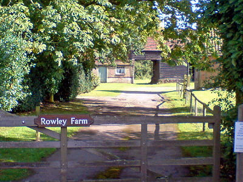
20th August 2008 - A few more THE AVENGERSunknowns added to LS1.
15th August, 2008 - Two more from Alan Field: the hotel seen in THE SAINT: Luella is Melia White House Hotel, Osnaburgh Terrace, NW1 (this was already in the guide, but not indexed) and Delancey Street, NW1 is seen in GIDEON’S WAY- The Wall.
10th August - Another impressive haul from Alan Field who has identified the following locations:
THE SAINT: Iris - The Lansings’ flat in is on
the corner of Bayswater Road, and Clarendon Place,W2
THE SAINT: The Scorpion and The High Fence - The Underground car park is
on the corner of Newcourt Street and Culworth Street, NW8
And a major locations from THE NEW AVENGERS:
Hostage, Steed takes the ransom
money to "14 Edge Street", which is Clifton Road, Slough, H65.
4th August - More THE SAINT unknowns on pages: LS4, LS7, LS22, LS46, LS60, LS74, LS83 and LS92
31st July - Geoff Dodd has found the Millwell Sanatorium from THE SAINT: The Best Laid Schemes as well as Marcel Legrand’s mansion in The Art Collectors. This is a house on Hadley Common, Hadley Wood, O17.
29th July - Some very observant spotting from Alan Field who has found Slough Gas Works, Uxbridge Road, H66 in two series. Firstly in - STRANGE REPORT: Revenge and in THE PROTECTORS: Blockbuster. As can be seen from the two photos Alan has sent in, a great deal of detective work was involved.
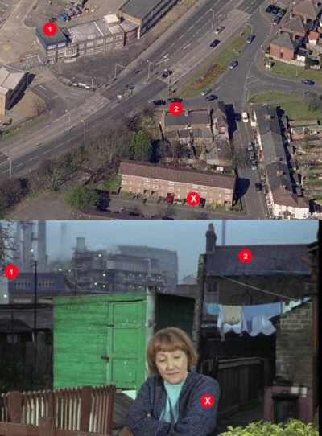 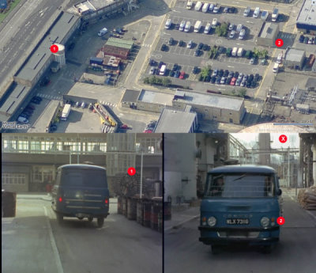
Alan has also found the picturesque spot in THE SAINT– The Desperate Diplomat where Simon’s Volvo crosses a bridge whilst following the kidnapper’s instructions. This is the A4146 Leighton Buzzard Road where it crosses the River Gade at Water End, B15. Also in THE SAINT: The Smart Detective, Baker Street, NW1 is seen as Swann and Miller follow Templar’s Volvo.
27th July - Geoff Dodd has been to Hadley Wood and spotted Hadley Hurst on Hadley Common, O17, as the mansion featured in Thriller: Ring Once for Death as well as finally confirming that the road village church seen in THE SAINT: The Chequered Flag is Saint Paul’s, Hadley Wood seen from Camlet way.
26th July - Local knowledge has enabled Mark Pond to identified Gerrards Cross Lawn Tennis Club, Chalfont Saint Peter, F49, as the spot where Kenneth Griffith approaches the tennis pro at the start of STRANGE REPORT: Heart.
26th July - Photographs of Gemini House have been sent in by Geoff Dodd to illustrate Q14 as seen in THE PROTECTORS: Blockbuster as well as a photo of Hale Lane Invisible Man location, Q22
24th July - Bob Rocca has identified the sports car shop featured in THE PROTECTORS episode Blockbuster as ‘The London Sports Car Centre that was located in Gemini House, 25-27 High Street, Edgware’, Q14.
22nd July - Many thanks to Sam Denham for sending in photographs of: Parson Street, NW4, Shepperton Studios, Shepperton Green, Regents Park Road, NW1 Primrose Hill Road, NW1 and Desborough Cut. He also clarified that the gates seen when Drake arrives in his Mini in DANGER MAN: Dangerous Secret are the old gates to Littleton Park House, recently removed.
21st July - Three new locations spotted by Alan Field; The ubiquitous Silver Hill, N21 is seen in THE PROTECTORS: Trial, an oasis of tranquilly, Pond Square, N6, appears in JOURNEY TO THE UNKNOWN: The Madison Equation and the former railway crossing at Bourne End, E11, pops up in THE SAINT: The Fast Women.
20th July - Martin Cooper has sent in a photograph of the location he spotted back in June, Hill Farm, Radlett, from THE AVENGERS: Thingumajig, O23.
4th July - Work started on turning LS83 into a THE SAINT: The Smart Detective page.
1st July, 2008 - Although the locations look almost identical, Joseph O’Dowd has spotted that Colville Place, W1, listed as a location in the DANGER MAN episode Don't Nail Him Yet. It is actually Charlotte Place, W1. The pub that Rawson hides in is The Duke of York.
29th June - Sam Denham has at last tracked down the apartment block used in THE SAINT: The People Importers and THE PROTECTORS: A Pocketful of Posies. This is the Hampstead Britannia Hotel on Primrose Hill Road, NW3. Sam has also spotted Janice Dixon’s flat as featured in THE SAINT: The Smart Detective. This is Hendon Hall Court on the corner of Parson Street and The Great North Way, NW4.
28th June - Alan Fieldhas sent in a collection of photographs of London Road/Silver Hill, N21. He has also spotted the location being used in the opening sequence of THEAVENGERS: Never Never Say Die. From the same episode Alan has found the location where Christopher Lee’s character breaks out of the padlocked ambulance, Tollgate Road, alongside the North Mymms war memorial, K1. He has also spotted the gates of North Mymms Park, K2, used as the gates of Narkover School in the 1935 Will Hay film BOYS WILL BE BOYS.
As suggested by Marishka von Saatz, Alan has confirmed Finsbury Park, N4, as the rendezvous in the THE PROTECTORS episode Petard. To top this all off he has found two new locations for the THE PROTECTORS episode, Shadbolt: The train carrying ‘Shadbolt’ and Harry disappears into Hadley Wood South Tunnel, O22, and the climax of the episode takes place at a quarry alongside the A1 just off Swanland Road, K7.
25th June - Alan Field’s new material has now been added to the guide. There is so much to mention that there is only room to acknowledge Alan’s contributions in the form of a list:
Original Spotted locations:
THE AVENGERS: Legacy of Death - N51 and N48
RANDALL AND HOPKIRK [DECEASED] – The
Smile Behind The Veil -
West End Lane, NW6
Unknowns Identified:
THE
SAINT: Queen's Ransom - B14
THE PROTECTORS: Chase
- B14
THE NEW AVENGERS: The
Tale of the Big Why -
H64
GIDEON’S WAY: The
Big Fix - P10
RETURN OF THE SAINT: The
Debt Collectors -
Q21
RETURN OF THE SAINT: The
Debt Collectors Barrington Road, N8
RETURN OF THE SAINT: The
Poppy Chain - Friern
Barnet Lane, N20
GIDEON’S WAY: The
Wall (Leslie Norman,
January 1965) - Albert Street NW1
THE PROTECTORS: The
Big Hit - Nine Elms Lane,
SW8
THE NEW AVENGERS: The
Three Handed Game -
Marryat Road, Wimbledon, SW19
GIDEON’S WAY: The
Ladykiller - Hendon
Technical College, The Burroughs, Hendon NW4
THE SAINT: A
Double in Diamonds -
Phillimore Gardens, W8
THE
PROTECTORS:…With a Little Help from My Friends - Charing Cross Road,
WC2
More detail provided:
GIDEON’S WAY: The
Reluctant Witness -
Netherhall Gardens, NW3
RETURN OF THE SAINT: The
Debt Collectors - Saint
Bernard’s Hospital, Uxbridge Road, W7
Photographs:
Bullhead Road, N50
Kendall Hall Farm, N30
Marryat Road, Wimbledon, SW19
Hillside Avenue, N50
Green Street, N51
Lyndhurst Gates, N48
20th June - Geoff Dodd has been good enough to dash out to Farm Court,NW4 and The Bridges, Aerodrome Road,NW4 to take photographs. The bad news is that he was two weeks too late for the RANDALL AND HOPKIRK garage, it is being ‘redeveloped. Geoff also informs me that the Bonusprint building at Q2 is also no more.
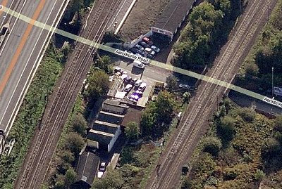 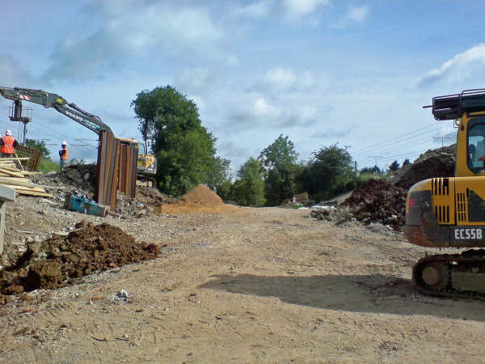
18th June - Alan Field has been doing sterling work first of all he has identified two locations that we have been looking for for years: from THE AVENGERS: The Interrogators the home of Caspar, Farm Court,NW4 and a stones-throw away from RANDALL AND HOPKIRK [DECEASED]: You Can Always Find a Fall Guy the garage where Jeff gets his car out of the garage in exchange for Marty's mini, The Bridges, Aerodrome Road,NW4.
Alan has also sent on a long e-mail of new locations and photographs which will take a while to enter, but one bombshell is this new location from THE PRISONER: Fall Out, which is our old friend Silver Hill, N21.
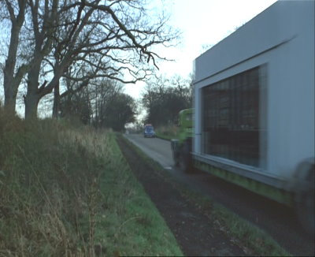 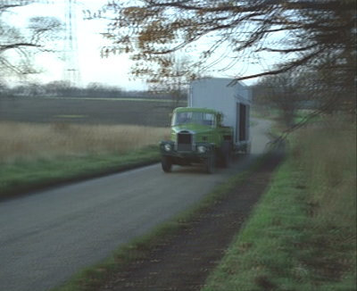
16th June, 2008 - Long-time contributor to Avengerland, Sam Denham, has sent in a location from THE PROTECTORS episode Zeke’s Blues. On his way to Bradley’s hideout Harry Rule drives along Haverstock Hill, Hampstead, London NW3. This should help track down other locations from the same sequence on LS70.
15th June - Another location goes to LS0 thanks to Geoff Dodd. The criminal gang’s country headquarters from DEPARTMENT S: The Man from X has been identified by Geoff Dodd and the authorities will be descending on the quite village of H10 very shortly.
13th June - many thanks to Alan Filed via the Britmovie Forum, for spotting the office of J. B. Foster as seen in THE NEW AVENGERS: Last of the Cybernauts...?? . This is the very distinctive Blythe House on Blythe Road, W14. Formerly the headquarters for Post Office Savings, it is now part of the Science Museum.
9th June - Mark Pond has identified the ministry building from THE NEW AVENGERS: Angles of Death as the South Bucks District Council offices that stood on Bridge Road, Maidenhead, seeLS72. These were demolished three years ago and the site is now occupied by flats. Can anyone out there find photos of the building?
7th June - Some serious spring cleaning of the Location Spotting pages has been attempted. Other than GIDEON’S WAY, all the found locations have been herded into a new page, LS0. This page has a number of uses: to clear the rest of the Spotting pages of found locations, to act as a quick reference to what has been found recently, and a repository of images in the hope that location spotters will be able to send in their photographs.
3rd June - A location that has been hidden from keen location spotters has come to light courtesy of Martin Cooper who has found ‘old Brett’s farm house from THE AVENGERS: Thingumajig, Hill Farm, Radlett, O23.
30th May - Thanks to Ryan McGuinnessfor a number of new photos of THE PROTECTORS locations on Malta. I’ve stuck all the identified Malta locations on one page, LS79 so that budding photographers know what images we are still looking for.
29th May - In response to the new locations found for MAN IN A SUITCASE: The Sitting PigeonGeoff Dodd has rushed out and sent in photos of Saint Luke's Church in Sydney Street, and the church hall in Saint Luke's Street, SW3. Many thanks for the prompt response.
24th May – It has been a very busy weekend following up e-mails from Paul Stroud and Jaz Wiseman.
Following on from Paul’s Oxford locations Jaz was prompted to remind me of Cambridge stock footage from THE ADVENTURER: Skeleton in the Cupboard, as well as footage shot in The Mall, SW1 and Spring Gardens, SW1. This got me to look at the episode where I spotted Lincolns Inn, WC2 standing in for a Cambridge college as well as a host on unknowns.
Meanwhile Paul Stroud sent in details of stock footage shot in Athens from THE CHAMPIONS episode Twelve Hours and Cannes from A Case of Lemmings. He also spotted the Lisbon stock footage from MAN IN A SUITCASE: Variation on a Million Bucks. This got me watching the two-parter and I spotted a host of locations that we didn’t even know were unknowns:,F42, George V Docks, E16, Lower Thames Street, EC3, and Madrid.
This just goes to show that there are still a number of locations that have still not made it to our Location Spotting pages, some of which were quite easy to find.
19th May – Paul Stroud has been in touch with a number of interesting contributions. Firstly he has been researching the Athens locations used in THE CHAMPIONS: Twelve Hours. The results of his research can be seen on LS100.
He has also been able to conclusively prove that the Oxford colleges featured THE CHAMPIONS episode The Experiment are Nuffield College and Balliol College. Both colleges have excellent virtual tours which are well worth a visit.
Most impressive of all he has found is the church and church hall featured in The Sitting Pigeon episode of MAN IN A SUITCASE. These are Saint Luke's Church in Sydney Street, and the church hall in Saint Luke's Street, both SW3. This is impressive as the location had been totally overlooked in the past. Well done!
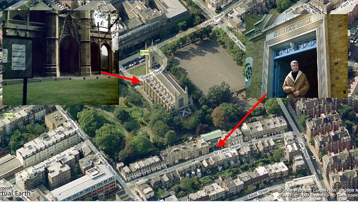
18th May – Another E-mail full of goodies from Geoff Dodd today. Firstly he spotted the view from Jeff Wheeler's window seen in JOURNEY TO THE UNKNOWN’sDo Me A Favor and Kill Me was looking onto Brompton Road, SW1 at the junction with Hans Crescent with Harrods.
Geoff has been working his way through BUDGIE recently and has spotted the same church that was used in THE SAINT: The Persistent Patriots. He has sent in screen grabs which can be seen on LS11.
He has also pointed out that the Silver Hill, N21 location seems to be very popular all of a sudden. He has identified the closing tag scene for THE AVENGERS: Too Many Christmas Trees is also filmed there. Comparison with the photo below proves it.
17th May - Celia O’Connor has identified the apartment of Yves Le Charolet seen in DEPARTMENT S: Death on Reflection as Lauderdale Road, W9. Again Celia has used her knowledge of the RANDALL AND HOPKIRK [DECEASED] to cross reference the location as it also appears in the episode All Work and No Pay.
Celia has also sent in some helpful local knowledge on Unknown 3 from DEPARTMENT S: Last Train to Redbridge on LS75.
16th May – James Hewett has, at last, found the piece of road that the Netco lorry travels down after the civil servant jumps into it in THE PRISONER episode Many Happy Returns. This is the ever-popular stretch of Silver Hill/London Road just outside Shenley, otherwise known as N21. We are still looking for the site of the police road block and the walk from the cliff up to the gypsy camp.
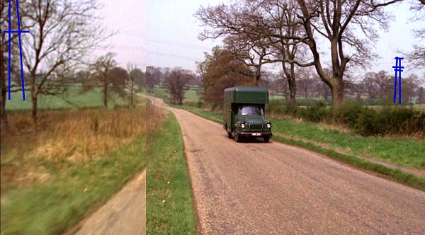 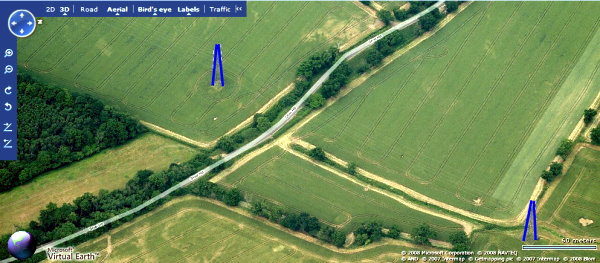
With James’s recent e-mail I’m also going to close the file on the sequence where the civil servant (Patrick McGoohan) borrows his Lotus 7 car back from Mrs Butterworth and heads into town to visit his old bosses. This has to be, as Geoff Dodd, and others have suggested, Elstree Way, Borhamwood just outside the old MGM studios.
Many thanks to Celia O'Connor who managed to identify the last location seen in GIDEON’S WAY: The Thin Red Line as Eaton Place, SW1. Her detective work was based on recognizing the same street when it appeared in the RANDALL AND HOPKIRK [DECEASED] episode My Late Lamented Friend and Partner.
10th May – Lots of ‘new’ photos on the N page.
4th May – Here are some other sites currently involved in some good work hunting down British Television locations:
HAMMER HOUSE OF HORROR - Hammer House of Horror Forum
MAN IN A SUITCASE – Yahoo Man in a Suitcase Group
THE PROFESSIONALS - The Professionals Forum
THE SWEENEY – The Sweeney Forum
British Film and Television Locations – Britmovie Forum
3rd May – Geoff Dodd has spent ten years looking for this location, and he has finally found it. In the MAN IN A SUITCASE: episode Which Way Did He Go McGill Donald Sutherland goes looking for two of his old friends on a motorcycle. He visits an apartment block and a quiet suburban home during his journey. Both of these can be found on The Fairway, Burnham, H63. Very well done Geoff! This leaves very few MAN IN A SUITCASE locations still to be found.
10th April – Frank Gadd has at last managed to find the home of potential defector Robert Fuller and the route he takes to his job at the Citizens Advice Bureau in the DANGER MAN episode Colony Three. Frank found both on Archway Road, Highgate, N6. This is exceptional spotting as much of this area has been redeveloped including, unfortunately the Citizens Advice Bureau building.
March – Two U.F.O. locations found:
From Andrew Chilcott, Confetti Check A-O.K. features
Northwick Park hospital, Watford
Road,Harrow - This is the office block
being built opposite the Harlington Straker film studios to cover the
construction of S.H.A.D.O.'s underground headquarters.
And Marishka von Saatz has confirmed Ian Press’ opinion from October 2005 that the racing circuit seen when Ed Straker chases after Jo Fraser in The Responsibility Seat is the Crystal palace Circuit closed in 1972. See this link for confirmation.
19th February – Very, very well done and many thanks to Celia O'Connor for finding the last unknown location from RANDALL AND HOPKIRK [DECEASED]: The Man from Nowhere. Celia spotted Sutherland Avenue, W9 /Hall Road Maida Vale/St. Johns Wood in the sequence where Marty and Jeff decide to pay a visit to Oxfordshire. Although Wyn Roberts had spotted Sutherland Avenue in other sequences from the episode, this short piece of back projection had eluded us until now.
18th February – Thanks to Eamonn Connolly for getting in touch with Robert Chilton who has identified the railway station used in DANGER MAN: Such Men Are Dangerous. Robert says he in 99% certain that the station is Maidenhead.
11th February – Many thanks to Wiebke Köppen for sending in a photo and background information on the Marlow house seen in JOURNEY TO THE UNKNOWN: Girl Of My Dreams. Wiebke writes “It was damaged by fire and has been replaced.. It was called Thames Lawn and once belonged to Frederick Man and to Captain J. Nichol Morris (there's a blue plaque indicating this at the entrance on Mill Road). But, what's even more exciting is that the house featured as M's residence in ON HER MAJESTY'S SECRET SERVICE!”
28th January – An exceptionally tricky identification has just been sent in by Richard Lee-Van den Daele. This is Ettington Park, Warwickshire seen only briefly as a photograph of the family home of Lady Ammanford from the DANGER MAN episode Whatever Happened To George Foster?. There were certainly no clues at all where this location was to be found, so this is quite an impressive find.
18th January – Out of the blue Steve Mason has sent in identification and photographs the Rathaus, St Gilgen, Austria as the stock footage shot seen in DANGER MAN: Say It With Flowers and THE SAINT: The Gadget Lovers. With some luck this will narrow down the search area for similar Swiss/Austria unknowns.
5th January – Very many thanks to Robbie Higgins for finding the office block from MAN IN A SUITCASE: Who's Mad Now?, one of the few MIAS locations still on the list of unknowns. As Robbie explains, “This location is 3-5 Putney Bridge Approach, SW6 it is now a Travel Inn but was at the time of filming one of the offices belonging to ICT a computer company which was also in the building opposite which appears in the shot the road to the left of the camera is Putney Bridge Approach and the road in front is Gonville Street SW6.”
4th January – All the DANGER MAN episodes have been reviewed and known locations entered into the guide. Unknowns can be found at: LS17, LS24, LS25, LS48, LS51, LS61, LS73, LS86, LS88, LS89, and LS101.
2007
31st December – Thanks to Mark Littlefield for photographs of Union Street, Barnet as seen in GIDEON’S WAY: The Reluctant Witness, this is now entered in to the guide as G25.
28th December – Jaz Wiseman has been kind enough to send in a number of photographs from his archive: The Duke of York pub, Saint John's Wood Terrace, NW8 as featured in THE PERSUADERS! Episode The Long Goodbye taken in September 1994 before it was refurbished, Lincoln's Inn, WC2 as seen in THE PERSUADERS! Episode Take Seven and Streatley Place, NW3 from THE SAINT episode The Scorpion. Thanks Jaz.
27th December 2007 – I knew I’d find them eventually. The islands seen in too many DANGER MAN episodes and THE PRISONER: Many Happy Returns as Number Six flies over possible locations for the village are and Carriacou & Petit Martinique, Grenada and Ashton Harbour, Union Island, St. Vincent and the Grenadines. All I can say is that there are a heck of a lot of islands in the Caribbean!

14th December – I’ve finished the M.G.M DANGER MANs and I’m now on to the Shepperton episodes. So far there are lots of sequences filmed in the old gardens of Littleton Hall, which was public access last time I was there, so I’m including these sequences in the guide. I’m also sticking in the shots of Littleton Hall itself as this could can seen clearly over the boundary fence (depending on how tall you are). There is a new DANGER MAN spotting page at LS24. With some luck this will narrow down the search area for similar Caribbean unknowns.
8th December – Reading the new ACTION TV I discovered that part of the planet Luton’s surface from SPACE:1999: The Rules of Luton were filmed at “H.F.Warner Ltd landfill site, Star Works, Knowl Hill, Berkshire”. I believe this research came from the shooting script published on the Space1999.net website. Watching the episode has confirmed Chris Bentley’s observation that both THE NEW AVENGERS: Cat Amongst the Pigeons and The Midas Touch use this location.
5th December – Another ‘spot’ from Alan Field to keep fans of THE PROFESSIONALS happy. Alan has located the scrap yard seen in A Man Called Quinn in West Hampstead of all places. See LS7.
3rd December – Lots of new material from Alan Field today. So much that I’m just going to list them.
GIDEON’S
WAY: The Reluctant Witness Hillside Avenue and Bullhead Road,
Borehamwood.
GIDEON’S WAY: The
Millionaire’s Daughter Kenway Road SW5 and Baker Street N1
and W1
GIDEON’S WAY: The
Prowler Hanger Green
W5
GIDEON’S WAY: The
Thin Red Line Charing
Cross Road, WC2, Park Lane, W1
GIDEON’S
WAY: The Lady Killer Market Hill, Buntingford,
Hertfordshire
DEPARTMENT S: The
Soup Of The Day Cheyne
Walk, SW10
THE AVENGERS: Girl On A Trapeze Battersea Bridge, SW10
THE AVENGERS: Bizarre Gypsy Lane, Watford
THE AVENGERS: A
Funny Thing Happened On The Way To The Station Watford Station and Gypsy Lane,
Watford
Alan has also sent in a number of photographs. As you can imagine it is going to take me a while to update the guide.
29th November – Thanks go to Sam Denham who has sent in a number of photos to illustrate locations in areas F and H.
More DANGER MAN pages at LS51, LS48 ,LS61, LS86 and LS88 as well as studio locations at MGM Studio Buildings and MGM Standing Sets.
28th November – Very many thanks to Mark Littlefield who has identified the street in which Syd Carter corners corners Tiny Bray in GIDEON’S WAY: The Reluctant Witness , this is Union Street, Barnet. This should help narrow the search area for other locations in the episode.
12th November – Open season is declared on DANGER MAN! Starting with LS61 I will be working my way through the series. As a result of this I will also be posting up MGM and Shepperton backlot and studio images on the Studios pages.
2nd November – After having spotted Roger Moore actually on location in Paris during The Covetous Headsman, I’ve decided to dedicate a page, LS14, to this episode as it has no locations listed so far. This should also give an opportunity for armchair spotting during the cold Winter months.
23rd October – Thanks once again to Geoff Dodd for spotting yet another GIDEON’S WAY location. This time it is from the episode A Perfect Crime. The location being the court where the case is tried, which is in fact Hendon Magistrates Court, The Hyde, NW9.
This week I’ve stuck all the MAN IN A SUITCASE unknown locations in to two pages; LS21 and LS39. If I’ve missed any please let me know.
15th October – Many thanks to Stuart Lyon for sending in a fantastic photo of the street in Castletown, Portland as seen it THE SAINT: The Miracle Tea Party.
14th October – To help illustrate the site Geoff Dodd has sent in a number of photographs: B13, the Watermill hotel at Bourne End from HAMMER HOUSE OF HORROR: The Carpathian Eagle, Q13, the Watford Road and Aldenham Road junction featured in GIDEON'S WAY: The Alibi Man. and Ennismore Gardens Mews and Ennismore Gardens, SW7 both from MAN IN A SUITCASE: Day Of Execution. Thanks Geoff, and if anyone else wants to send in photographs of locations as they look now to fill the gaps on the site, they are always appreciated.
8th October – Three more locations identified by Alan Field. From GIDEON’S WAY: The Housekeeper, the chrucrch where “Old Charlie” is buried is the churchyard of St Lawrenc, Cowley now to be known as H62. MAN IN A SUITCASE: The Whisper features the junction of Harrington Road, SW7 with Cromwell Place, Thurloe Street, Brompton Road, Onslow Square and Pelham Street. and, finally Alan fas found the last missing location from STRANGE REPORTSwindle in Newhaven. Alan has also sent in photographs to illustrate all his new finds.
3rd October – Gerard’s Cross is proving a fertile hunting ground for location spotters with Sam Denham finding yet another THE NEW AVENGERS location. This time it is George Stannard’s flat, F46, which is visited by Steed inThe Eagle's Nest. Also by a bizzare coincidence Sam has also spotted the last location needed from STRANGE REPORT: Report 1021 Shrapnel, Sylvia Syms‘ house at H61, Pinewood Close, Iver Heath.
28thSeptember –Geoff Dodd has found the barracks used in THE CHAMPIONS episode The Fanatics. As well as sending in photos of the locations Geoff sent the following information: “Inglis Barracks, Bittacy Hill NW7 but the area seen in the episode is now Barnet Council's environmental department. The barracks was apparently used as the army's postal sorting office and was the one bombed by the IRA in the 80's. The rest of it has just been sold off and has been handed over to developers in the last couple of weeks so it won't be there much longer. The entrance seen in the episode is what was the side entrance opposite the tube station as the main entrance is/was in Frith Lane.”
Geoff also spotted the Coroner’s Court from THE SAINT: The Saint Plays With Fire which is actually part of Mill Hill School The Ridgeway, R10.
27thSeptember – Another STRANGE REPORT location bites the dust as Mark Pond has spotted the dry cleaner’s shop from Report 1021 Shrapnel. This is in Packhorse Lane, Gerrards Cross, F45. Mark had also spotted a location in Warren Road near Uxbridge from THE PROFESSIONALS: Heroes. Mark has sent in excellent photographs from these locations as well as the bridge Mike Pratt is building in UFO: The Psychobombs.
Alan Field has been busy again and has come up with another bumper crop of fine locations. From RETURN OF THE SAINT: Yesterday’s Hero he has confirmed and clarified Stephen Winterbottom’s suggestion and cleared up the e name of the road is Porters Park Drive, N23. From THE NEW AVENGERS: Sleeper Alan has identified the deserted railway stations as Kensington Olympia, W14. A location that has been totally overlooked, but found by Alan is the East German wasteland seen in MAN IN A SUITCASE: Somebody Loses....Somebody Wins? Which he has identified as Brentford Gas Works, the High Street Brentford. Alan has also knocked off another GIDEON’S WAY location by spotting a shot from Harper Lane, Radlett, J12 used in Boy With Gun.
To finish of a busy week Alan has spotted the unspottable bu finding the missing location from THE PROFESSIONALS: Hunter/Huntedat The Fairway, East Acton. As Alan explains: “I had to watch 32 episodes (all I have) of THE PROFESSIONALSand 26 episodes of THE SWEENEYbefore I found a lamppost of the same style and colour scheme as the one in the background. Fortunately when I did I recognised the area as being South Acton so it was then just a question of checking every church and chapel in the area. It’s a good thing that those flats across the road are so distinctive because everything else has changed. The house used for the filming has been extended by about 50% and had a garage built on, and the Methodist Church across the road, which had suffered a fire in 1977, has been demolished and replaced (although it has kept its original fence and gates).”This is true dedication.
16th September – Thanks to Al Smudge Samujh who has sent in two important locations with photos from THE NEW AVENGERS: from Target the location of the telephone box where Dick Palmer dies, Adelaide Square, Windsor, and fromTrap the final missing location from the drugs-bust sequence. This is Edinburgh Gardens, Windsor.
14th September – Lots of new then and now photographs from Stephen Carter for GIDEON'S WAY: The Tin God and Boy with Gun. These can be found at LS47 and LS97. Stephen has also found a number of new locations for these episodes as well as The Houskeeper, State Visit and The Reluctant Witness.
Geoff Dodd has sent in a photo from Elstree Way to help with the hunt for those, stubourn, hard-to-find THE PRISONERlocations.
A number of locations entered for my favourite THE SAINT episode, The Golden Journey.
I’ve also been through my photo album and added a number of photographs to the About Britain page.
12th September - The whole site is up and running again. I’ve learnt a few tricks about editing the pages to make them more user friendly along the way. I noticed that there are over 300 photos each in the Avengerland in the Action City pages, but over 2,000 in the Location Spotting pages! So there are still a lot of locations out there to find.
Please have a look around the site at all the new locations that have been found recently and all the excellent photographs that have been sent in. We are always happy to receive photographs to illustrate the locations as they appear today, especially as so many could be gone tomorrow.
1st September - Stephen Carter has sent in an excellent set of photographs to show how locations from Big Fish, Little Fish and Boy with Gun have changed since they were used in GIDEON'S WAY. To see them go to LS20 and LS47.
31st August – That damned quarry in Wales from THE PRISONER: The Chimes of Big Ben where number 6 and Nadia go for a swim finally identified…in Folkestone!
30th August – Thank to Sam Denham for locations from; THE AVENGERS: They Keep Killing Steed, Thingamajig,DeadMan’s Treasure and THE SECRET SERVICE: The Feathered Spies.
Thanks also for Stephen Carter who has identified streets in GIDEON'S WAY: Big Fish, Little Fish as Frostic Place, and Old Montagu Street, both E1.
28th August– Allan Field has found locations for both Albert and Victoria: Albert Embankment, SE1 in GIDEON'S WAY: Firebug and Victoria Embankment, EC4 in GIDEON’S WAY: The White Rat. He also sent in photographs for both locations.
Geoff Dodd has been to the Hadley Wood area and found locations from THE SAINT: Where the Money Is and THE CHAMPIONS: The Fanatics. See O17, O18 and O19.
27th August – Lots ofGIDEON’S WAY research from Stephen Carter. Far too much to mention here, so visit LS12, LS20, LS53, LS63 and LS98 or details.
24th August - Jean Pierre Borg has been in touch with some Maltese locations for LS83 and LS79.
Bob Rocca has sent in details of THE PROFESSIONALS locations he is still looking for. They can be found at LS7.
23rd August- O8: “A1, Borehamwood” location removed from THE PRISONER: Do Not Forsake Me Oh My Darling listing. There is just no evidence that the short piece of back projection is the A1.
Two more spots from Alan Field, the last part of Gambit’s dash to the gold exhibition form THE NEW AVENGERS: The Midas Touch and Hyde Park Street, W2 seen in GIDEON'S WAY- The Great Plane Robbery.
22nd August – Another swimming pool found. This time from THE NEW AVENGERS: Cat Amongst the Pigeons. Also three new locations from Obsession. I’m working on the THE NEW AVENGERS location spotting pages, LS71 and LS72, hence all the finds.
21st August–Five new locations found for the car chase sequence from the opening of THE NEW AVENGERS: The Lion and The Unicorn, originally shot as an advert for British Leyland cars.
20th August – Not a bad weekend for location spotting amongst others the following THE NEW AVENGERS locations are now found: The Midas Touch – the exhibition centre and one of the roads featured in the mad dash gambit takes to get there to save the princess. House Of Cards – The route Perov takes in his helicopter when tracking Steed. Faces – The sports club where Craig is shot whilst swimming.
17th August – After using Microsoft’s Virtual Earth/Live Search for nearly a month now I would like to recommend it as a wonderful location spotting tool for areas covered by its 2D Bird’s Eye View option. The Birds Eye option gives high definition pictures at an angle that shows a lot more than roof-tops. There are also many areas where the location can be viewed from different angles. I’m still using Google Earth for other mapping operations as the navigation and overall coverage is still better.
16th August – Almost as soon as the photos have been posted up Ian Garland has spotted the motel used by Suzanne Danielle in HAMMER HOUSE OF HORROR: The Carpathian Eagle. The location is the Watermill Hotel on the London Road (A4251) at Bourne End between Berkhamsted and Hemel Hempstead. Ian has also identified the farm seen in THE SAINT: The ConvenientMonster, see LS29.
Six more spots from Alan Field: GIDEON'S WAY: The Prowler, Kings Road, SW3 and Carlyle Square, SW3. GIDEON'S WAY: Nightlifers, Blantyre Street, SW10, STRANGE REPORT: Grenade, Bridge Road, Uxbridge H53, GIDEON'S WAY: The Big Fix, another racecourse shot confirmed as SandownPark, Surrey. GIDEON'S WAY: The Tin God, Marylebone Goods Yard, NW8 and Cross Road, Bushey, P9. So of these were very tricky places to identify. Well done Alan!
14th August - Stephen Carter has identified the railway tunnel seen in THE SAINT: The Man Who Could Not Die as Culvert Road tunnel, SW11.
13th August – Mark Pond has sent in a photograph to confirm his F43 location, and it has not changed much in 37 years.
Many thanks to Bob Rocca who has written in to identify the HAMMERHOUSE OF HORROR: The Thirteenth Reunion’s location location. See LS93for details.
11th August – Two locations that we have been searching for since this site first started have been identified by Alan Field. So it is with mixed feeling I can reveal that the village and church seen in JOURNEY TO THE UNKNOWN: Somewhere in a Crowdis Frensham, Surrey. This has also led to the lake seen at the end of episode being identified as Frensham Pond. Alan’s second spot is the street seen at the end of MAN IN A SUITCASE: Brainwash when McGill escapes and stumble around covered in blood. This is Wallingford Road, H52. Alan has also confirmed, with photos, his original suggestion that Randolph Gardens NW6 appears in STRANGE REPORT: Heart. On top of all that he has sent in a clue to some of the locations on LS91.
10th August – HAMMER HOUSE OF HORROR unknowns page added at LS93.
Location Spotting pages have been rearranged so that the remaining THE AVENGERS, THE NEW AVENGERSand U.F.Olocations are together. Old Newshas been archived here as this page was getting far too big.
Stephen Carter has identified the church seen in GIDEON’S WAY: The Nightlifers.
8th August – Another old chestnut has been identified, Mike Pratt’s construction site from U.F.O.: Psychobombs. Mark Pond has found it on the M40 near Beaconsfield, F43. On top of that he has also spotted the same location in THE PERSUADERS!:The Gold Napoleons. At this rate there will be no locations left to spot!
7th August – Confirmation of two Portland locations on LS27from new contributor Stuart Lyon. Many thanks to Stuart also for sending in a photograph to illustrate his find.
6th August – Two huge E-mails today which I’m still in the process of incorporating into the guide. Pease visit LS85, LS88and LS89for Alan Field’s STRANGE REPORT contributions. For some superb research and GIDEON’S WAY ‘then and now’ photos from Stephen Carter visit LS27 and LS63. Both Stephen and Alan have sent in a marvelous selection of photographs. Thanks guys.
3rd August – Work on page LS8.
2nd August –Thatched cottages seen in THE CHAMPIONS: The Night People identified as North Bovey on Dartmoor in Devon by Ian S. Bolton. Ian has also been able to confirm a GIDEON’S WAY location as London Wall EC2 and eliminate some possible Peacehaven locations.
1st August – Mansion used as the ‘safe house’ from the beginning of THE NEW AVENGERS: Emily located.
31st July – Jaz Wisemanhas been in touch with some more detail on Kensal Road, W10 which should help identify a number of GIDEON’S WAYlocations.
30th July – More excellent photos from Stephen Carter of locations from GIDEON’S WAY: Boy with Gun and Big Fish, Little Fish. He has also been able to tie down some very tricky unknowns. Most of the photos can be seen in the E1 area.
28th July – More spots from the NWs and Stephen Carter with Grafton Road, NW5, Wilkin Street, NW5and Athlone Street, NW5all from GIDEON’S WAY: Gang War. Athlone Street also features in STRANGE REPORT: Skeleton. Stephen has sent in a number of photographs which will be published as soon as I get the Action City pages up a running again.
27th July– I’m still working on the ‘renovations’ especially in regards to illustrations.
26th July – William Pitt-Jones has sent in some useful information for the unknown locations in GIDEON’S WAY: The Reluctant Witness on page LS9. He used to live in the area featured and much of it is now unrecognizable.
25th July – I’ve just been sent the new edition of ACTION TV the magazine is full of useful titbits. I’m especially interested in the second half of the article on THE BARON as it is helping me fill in the gaps in the production chronology.
I stumbled upon WiebkeKöppen’s web site last week. This is an excellent site put together by someone who is trying to visit many THE AVENGERS. There is a fine gallery of then and now photographs as well as features on the Dead Man’s Treasure Hunts she has attended.
20th July – Well into work on JOURNEY TO THE UNKNOWN, some new locations already identified and a page of unknowns in preparation.
16th July – Geoff Dodd has sent me a link to the Internet Movie Car Database. This site is trying to do the same thing with vehicles that we are trying to do with locations. Series already covered include MAN IN A SUITCASEandTHE BARON. This could be a useful resource for location spotters as some buses and trams are country or even city specific.
Stephen Carter has identified Old Saint Pancras Church Gardens, Pancras Road, NW1 as being featured in GIDEON’SWAY: State Visit. He also spotted the same location in a photo shoot for the Beatles!
Allen Field has sent in more locations: From THE NEW AVENGERS locations seen in Target, Faces and The Tale Of TheBig Why. From STRANGE REPORT, Hedgerley Lane and Hatfield Car Park, Slough (see LS85 and LS86). And finally from DEPARTMENT S, the Piccadilly Line between Southgate and Oakwood as seen on LS75.
Thanks guys I am really impressed that you are finding time to send so much new material in.
11th July – The last of the GIDEON’S WAY unknowns have been posted up on LS6. The pages still need some work – but all the locations are there somewhere, known and unknown.
6th July –Very many thanks to Margaret Field for at last spotting the Miller’s house in the country from of NEW AVENGERS: House of Cards.
5th July – Photographs from Alan Field for the spot he has already sent in added. Plus a couple of NEW AVENGERS spots – The Bishop’s church from House of Cards and the bridge from Medium Rareat H48.
Also finished are two more pages of GIDEON’S WAY unknowns at LS87 and LS91.
3rd July – Stephen Carter has been out and about again and has sent in photographs of the area around of Tom Bishop's old house from GIDEON’S WAY: The Firebug.He has also taken photos of a number of pubs from the same episode. Keep an eye on the GIDEON’S WAY pages as they are the centre of a lot of activity recently.
2nd July – Alan Field has sent in photos and a number of obscure spots, including some that have been sitting around on the site for a very long time. Well done Alan!
MAN IN A SUITCASE: All
that Glisters -
Holy Trinity Church, Seer Green
THE SAINT: The
Helpful Pirate -Brentford
High Street
THE BARON: The
Edge of Fear- Church
Street - Isleworth
RETURN OF THE
SAINT: The Debt Collectors The gates to the old St Bernard's
Hospital, Uxbridge Road, Hanwell
STRANGE REPORT: Report 0649 SKELETON: 'Let Sleeping Heroes
Lie 'Denham Way
1st July – More ‘spots’ and photos from Wyn Roberts and GIDEON’S WAY: The Alibi Man – Fortis Green, N10 and Queen’s Avenue, N10.
Also a very good spot from newcomer Alan Field who has managed the impossible by identifying the disused railway station in GIDEON’S WAY: How to Retire Without Really Working. He also sent in this link to Subterranean Britain to prove it. Alan has also positively identified the all-important grave yard from THE AVENGERS: The Grave-Diggers.
30th June– Despite the garage being redeveloped, Wyn Roberts has identified the location for The Carroway and Grant Garage seen in GIDEON’S WAY: The Alibi Man. It is Finchley High Road, N2.
29th June – Geoff Dodd has sent in a link to a very detailed photographof the old MGM studios in Borehamwoodhttp://www.tsf.net/~penrose/mgm.jpg. He has also sent in photos of Magda’s house in Belsize Square, NW3 from MAN IN A SUITCASE–Castle in the Clouds as well as confirming more shots of Brompton Road, SW7from the MAN IN A SUITCASEepisodeThe Whisper.
28th June - Stephen Carterhas spotted a number of locations from GIDEON’S WAY: The Big Fix including Oxford Street, which he has photo graphed and Piccadilly. But his most notable find was Aldbourn which is famous for its appearance in the DOCTOR WHO episodeThe Dæmons. This is significant to me (the editor) as it is one of the first filming locations I ever made a conscious effort to go and visit.
26th June – Very good to hear from Stephen Carter again, especially as he has identified and photographed the dockland corner featured in STRANGE REPORT: Report 3424 Epidemic. The location is The Anchor, Bankside, SE1.
26th June – Long-time contributor Wyn Roberts has sent in a number of spots and a magnificent selection of photographs:
Haverstock Hill,
NW3– GIDEON’S WAY:
The V Men
Hampstead Road, NW1 - GIDEON’S
WAY: The Firebug (which
is named in the episode – but still needed confirmation)
Cumberland
Market NW1- JASON KING-
An Author In Search Of Two
Characters
Mornington Terrace
NW1- GIDEON'S WAY-
The Firebug.
Fitzjohn's Avenue NW3 - THE
CHAMPIONS- Nutcracker
Dennis Parade N14 - DEPARTMENT
S- Last Train to Redbridge
25th June - Geoff Dodd has spotted Allitsen Road, NW8 in DEPARTMENT S:The Perfect Operation.
24th June – Geoff Dodd has spotted a number of locations for the MAN IN A SUITCASE episode The Whisper: The Tower of London, EC3, N22 and Marble Arch, W1. We had somehow overlooked this episode of MAN IN A SUITCASE completely so there are some unknowns in the UK still to find.
22nd June – Mother’s swimming pool from All Done with Mirrors identified.
17th June – Lots of new stuff to add, so much that I’m having to do a bit a of Spring cleaning. So please bear with me as a number of pages will be dropping in and out as I tidy things up.
8th June – Yet another new THE PRISONER location found, "The Warren", Folkestone, seen in The Chimes of Big Ben. Thanks to Unmutual web site for a very big clue.
7th June – It has just been pointed out to me that Chris Bentley is about to release a book about THE AVENGERS locations. I would just like to point out that this site has nothing at all to do with Chris’ book and this is the first time I have heard anything about it.
5th June–Back on the Internet at last – please visit LS Page 101 for all the new spots.
4th June–Unable to post up new stuff due to problems with web access. One major find has been a new THE PRISONER location in Montreal, Canada.
24th May – After a long absence Marishka von Saatz has written in with a lot of new information to help find other locations and bumper crop of ‘spots’ and photographs:
JASON KING: An
Author in Search of Two Characters - Kingston House North,
SW7 and Gloucester Road,
SW7
THE SAINT: When Spring is Sprung - Rutland Gate, SW7
THE SAINT: The Lawless Lady - Kensington Gate, SW7
RETURN OF THE SAINT: Assault Force - Exhibition Road, SW7
MAN IN A SUITCASE: The Girl Who Never Was – Kensington Palace Gardens,
W8
GIDEON’S WAY: How to Retire Without Really
Working - Hyde Park Crescent, W2
and Piccadilly, W1
25th April - Eric Belhocine-Boissy has at last spotted a new THE NEW AVENGERS French location. The location is the French National Archives, and is seen K is for Kill Part 2 - Tiger by the Tail as Purdey and Gambit wait to hear the decision of the meeting.
22nd April -Scot Fergie has spotted Tyke's Water Bridge in the THRILLER episode Murder Motel. Of the few episodes of THRILLER I have seen, many contained AVENGERLAND locations. So the series is well worth watching for clues.
21st April – Geoff Dodd has sent in a number of photos to fill the gaps, which has spurred me on to add a few of my own.
19th April – John Drake’s flat from DANGER MAN has been found. Geoff Dodd has identified the flat as 6 Groom Place SW1.
18th March –Great news from Jaz Wiseman that Roy Baker’s script for THE AVENGERS: Strictly For The Worms (Silent Dust) has written notes stating that: The Stirrup Cup Inn was actually known as the Pink Hotel in the 60s, and that most of the other location footage was filmed at Strangeways Farm, in Rowley Lane, Borehamwood.
Jaz has listed the scenes:
Where Emma meets Quince late
at night in a spinney and Quince is killed.
Where Steed arrives at a derelict
farm building and is warned off by Mellors. He goes into the farmhouse..
The
following scenes where Mellors tries to shoot Steed and he gets his leg caught
in a mantrap.
The night scenes of Emma at the farm
The western ‘nightmare’ scene.
All of the hunt action scenes we’re filmed in the fields belonging to
and around the farm.
February – March– Most weeks have seen the addition of a new GIDEON’S WAY page of spotted and identified locations.
24th February – Geoff Dodd has found the breakers yard that Suresh Gupta escapes to in THE SAINT: The People Importers. It is certainly off the beaten track in Britannia Road, Waltham Cross. Full marks to Geoff for hunting down an unlikely lead and sending in some excellent photos.
23rd February – All the locations from Page 101 have now been absorbed into the guide and the page closed down. I still have several pages of identified locations to write up and place in the guide.
11th February – Went thought the old photo albums today and posted up a few photos.
5th February – All the spotted locations from the spotting pages have been moved to page Location Spotting Page 101 prior to being accommodated in the right spot in the guide. Spot on!
4th February – All the London RANDALL AND HOPKIRK [DECEASED] locations are now on one RANDALL AND HOPKIRK [DECEASED] page.
1st February – Ivor Williams has sent in a location that I didn’t think anyone would ever spot. Finding it was so unlikely that I had not even included it in the Spotting pages. In THE CHAMPIONS: Project Zero we see a two engined charter plane ferrying scientists to and from Scotland. Ivor has managed to identify the airfield as Panshanger Airfield near Welwyn Garden City. Ivor also writes: “It's actually been used in many old British films and series over the years. Most notably the films, HOPSCOTCH, OUR MISS FRED, DR PHIBES (can't recall which one but it's the one with the crashing biplane!) and the truly awful RENTADICK. Some of the airfield scenes in THE BATTLE OF BRITAIN were also filmed there as well as Duxford. We had a school trip to see some of that taking place. A chap I know who used to own an aircraft based at Panshanger told me that the opening sequence of BUDGIE, where Adam Faith is chasing the bank notes was also filmed in the main hanger there. Not sure how true that is but several people I've since asked have told me the same thing.”
1st February – I managed to get limited (10 day) access to a site containing old London telephone directories. The result of this has been a very large number of locations found, especially from GIDEON’S WAY. It will a while to update the site. On the down side, it has also given me an indication of just how many locations have been ‘redeveloped’ over the years.
28th January – After some sterling detective work Geoff Dodd has discovered the location of the mansion see in THE SAINT episodes The Art Collectors and Invitation to Danger. This has been one of those locations that should have been easy to find, given the size of the property, but has taken a lot of hard work to track down. Details on the location as well as Geoff’s photos can be seen at D17 and D18.
Geoff has also been able to confirm the location of The Rainbow Garage from THE PROTECTORS episode Triple Cross. Unfortunately there is very little of J11 left as can be seen in Geoff’s photo.
22nd January- Geoff Dodd has sent in some photos of locations in the Hatfield and St. Alban’s area. I’d like to see current photographs of all the locations featured, on the site, so any contributions are much appreciated.
9th January - Location Spotting page 3 has been updated with a few more unknowns and one ‘very possible’ posted.
2nd January - Geoff Dodd has e-mailed me a number of new spots, suggestions and photos – which I’m working on posting up at the moment. He has also reminded me to let everyone know when I post up any more unknowns – which I will do to save the rest of you having to flick through 100 pages just in case.
1st January 2007 - Location Spotting page 77 now populated with all the locations from GIDEON’S WAY: Morna